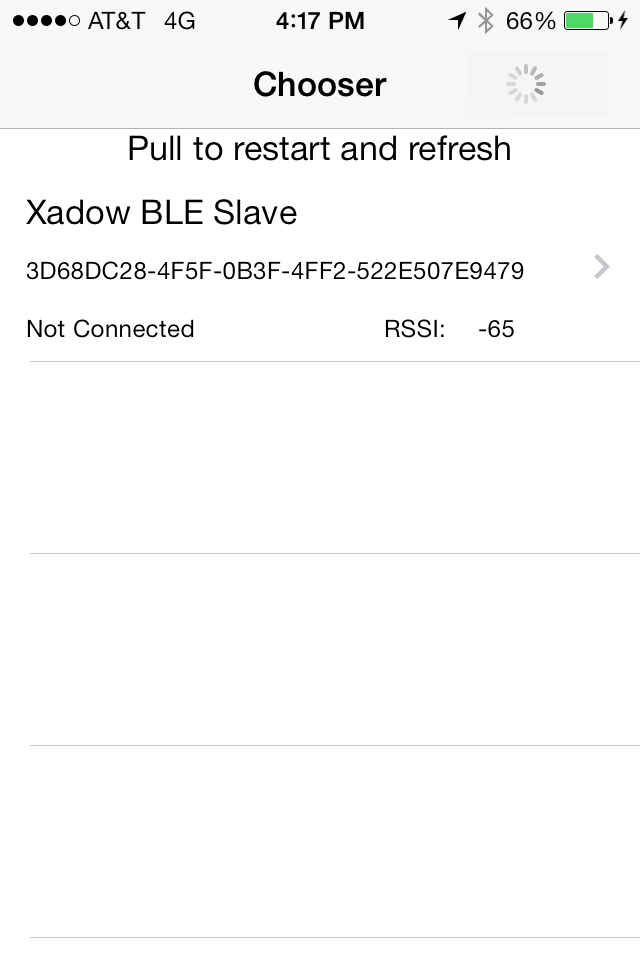

Description
A simple iOS iPhone application that demonstrates how to use the CoreBluetooth Framework to connect to a Bluetooth LE 'spp' peripheral to read, write. Based on the Apple 1.0 Temperature Sensor example code.
Currently supports the Seeed Studio Xadow BLE device as well as the Redbear device. Should support many other devices with few changes. You can edit the LeDataService files to work for your device, particularly the characteristic UUIDs. I accept pull requests of new LeDataService classes for other devices, or if you want to ship me your device I might be able to get to it.
Important: This project requires a Bluetooth LE Capable Device (iPhone 4s and later; iPad 3 and later; iPod Touch 5; iPad mini) and will not work on the simulator.
BUILD REQUIREMENTS:
- Xcode 5 or greater
- iOS 7 SDK or greater
RUNTIME REQUIREMENTS:
- iOS 6 or later Bluetooth LE Capable Device Bluetooth LE Sensor/s
Install it the hard way
Download OpenBLE and copy everything in /Classes into your xcode project. Or more preferrably use cocoapods.
Install it via Cocoapods
Create a new xcode project or workspace or go to your existing, open a terminal in that directory, and type:
sudo gem install cocoapods
touch Podfile
echo -e "platform :ios, '5.0'\npod 'OpenBLE'" >> Podfile
pod installIt should complete and tell you to utilize the .xcworkspace from now on.
Use it
Click on that xcworkspace file to open your project from now on and youll find your project with the source code all loaded up. Now you can:
#import "LeDiscovery.h"
#import "LeDataService.h"And have your class register as Discovery and Service protocols:
@interface ViewController () <LeDiscoveryDelegate, LeServiceDelegate>
@endCreate a discovery object, set its yourself as its delegates, and start scanning
[[LeDiscovery sharedInstance] setDiscoveryDelegate:self];
[[LeDiscovery sharedInstance] setPeripheralDelegate:self];
[[LeDiscovery sharedInstance] startScanningForUUIDString:nil];When the Discovery finds something it and return a delegate so set up a delegate function:
- (void) discoveryDidRefresh
{
for (id object in [[LeDiscovery sharedInstance] foundPeripherals])
{
NSLog(@"peripheral: %@", object);
}
}Or you could connect to the first one it finds:
NSArray *devices = [[LeDiscovery sharedInstance] foundPeripherals];
CBPeripheral *peripheral = (CBPeripheral*)[devices objectAtIndex:0];
[[LeDiscovery sharedInstance] connectPeripheral:peripheral];You get a did change status delegate for a connect:
- (void) serviceDidChangeStatus:(LeDataService*)service
{
if ( [[service peripheral] isConnected] ) {
NSLog(@"Service (%@) connected", service.peripheral.name);
}
}But you may want to wait a bit longer for the did receive rx/tx characteristics delegate:
- (void) serviceDidReceiveCharacteristicsFromService:(LeDataService*)service
{
NSLog(@"Service (%@) did receive characteristics", service.peripheral.name);
}Because now you can send
NSData *tosend = [@"Hello World" dataUsingEncoding:NSUTF8StringEncoding];
[currentlyDisplayingService write:tosend];
and receive:
- (void) serviceDidReceiveData:(NSData*)data fromService:(LeDataService*)service
{
NSLog(@"%@", [[NSString alloc] initWithData:data encoding:NSUTF8StringEncoding]);
}Example app
Open the example app in /examples for a much more thorough implementation example. It lists bluetooth devices, connects, and when it recieves read and write characteristics segues to a screen where you can send and receive data

Support or Contact
Use the github issues queue https://github.com/OpenBLE/OpenBLE/issues to report bugs or contribute code.